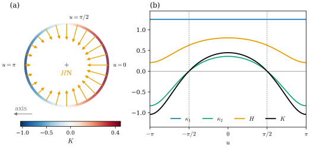
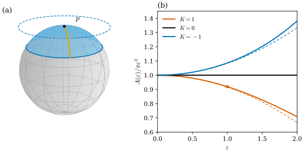

39.3 Gaussian and Mean Curvature
Goals
- \(K = \det W\)와 \(H = \tfrac12\tr W\)를 \(\mathsf{W}\)에서 계산하고, normal을 뒤집으면 \(H\)만 부호가 바뀌며 mean curvature vector \(H\mathbf{N}\)은 그대로라는 것을 설명할 수 있다.
- \(K\)와 \(H\)의 부호와 값으로 developable surface와 minimal surface를 알아보고, 예와 비예를 들 수 있다.
- 작은 geodesic disk의 넓이 \(A(\varepsilon) = \pi\varepsilon^2 - \tfrac{\pi}{12}K\varepsilon^4 + O(\varepsilon^5)\)를 진술하고 sphere에서 확인하며, 이것이 \(K\)가 intrinsic이라는 뜻임을 설명할 수 있다.
- total mean curvature와 Minkowski inequality를 진술하고, 수치 적분으로 확인할 수 있다.
Prerequisites
- Section 39.1–39.2: Proposition 39.1.2, Exercise 39.1.2(reparametrization), principal curvature와 Euler's formula (39.2.4), Example 39.2.8.
- Chapter 38: induced metric과 넓이 Proposition 38.2.5, area form (38.3.5).
- Track 3에서 상기할 것: Gaussian curvature와 mean curvature Definition 8.4.1, 그 성질 Proposition 8.4.2, 좌표 공식 Theorem 8.5.5, Gauss map의 넓이 비율 Proposition 8.4.11. Tour의 Theorema Egregium Theorem 0.5.1.
Motivation
Section 39.2에서 한 점의 굽음은 두 수 \(\kappa_1 \ge \kappa_2\)와 두 방향으로 정리되었다. 그런데 방향은 점마다 따로 골라야 하고, umbilical point에서는 정해지지도 않는다. 방향에 무관한 수가 있으면 편하다. 2차원 linear map에서 basis에 무관한 수는 determinant와 trace다. 곧 eigenvalue의 곱과 합이다.
두 수는 성격이 아주 다르다. Section 39.1의 Figure 39.1.2에서 \(\det W\)의 부호는 \(W\)가 도는 방향을 보존하는지 뒤집는지였고, normal을 뒤집어도 바뀌지 않았다. 이 절의 후반은 \(\det W\)가 normal을 쓰지 않고도, 곧 surface 안에서 넓이만 재어도 보인다는 것을 보인다. 반면 \(\tr W\)는 normal의 방향과 함께만 뜻을 갖고, 대신 넓이를 줄이는 방향(Section 41.2)과 이어진다.
Determinant and Trace of the Weingarten Map
\(\mathbf{x}\colon U \to \R^3\)이 immersion이고 \(\mathbf{N}\)이 그 Gauss map이라 하자. Gaussian curvature(가우스 곡률)와 mean curvature(평균곡률)는
이다(Definition 8.4.1, Theorem 8.5.5. \(\mathsf{W} = \mathsf{g}^{-1}\mathsf{h}\)는 (39.1.3)). 둘째 등호들은 \(\mathsf{W}\)가 \(\kappa_1, \kappa_2\)를 eigenvalue로 갖기 때문이고, 셋째는 \(\det(\mathsf{g}^{-1}\mathsf{h}) = \det\mathsf{h}/\det\mathsf{g}\)다. 거꾸로 principal curvature는 \(\lambda^2 - 2H\lambda + K = 0\)의 근이므로 \(\kappa_{1,2} = H \pm \sqrt{H^2 - K}\)이고, \(H^2 - K = \big(\tfrac12(\kappa_1 - \kappa_2)\big)^2 \ge 0\)이며 등호는 umbilical point에서만 성립한다(Proposition 8.4.2(c)). 이 식은 mesh에서 \(K\)와 \(H\)를 먼저 구하고 principal curvature를 만드는 데 그대로 쓰인다(Definition 41.3.3).
좌표를 바꾸면 \(\mathsf{W}\)는 \(\sigma\,Dh^{-1}\mathsf{W}Dh\)로 바뀌므로(Exercise 39.1.2, \(\sigma = \sgn\det Dh\)) \(K\)는 좌표에 무관하고 \(H\)는 orientation을 뒤집는 좌표 변환에서만 부호가 바뀐다. normal의 선택에 대해서는 다음이 성립한다.
Proposition 39.3.1 (the mean curvature vector). unit normal을 \(\mathbf{N}\)에서 \(-\mathbf{N}\)으로 바꾸면 \(\mathsf{W}\)는 \(-\mathsf{W}\), principal curvature \((\kappa_1, \kappa_2)\)는 \((-\kappa_2, -\kappa_1)\), \(H\)는 \(-H\)가 되고 \(K\)는 그대로다. 따라서 vector \(H\mathbf{N}\)은 normal의 선택에 무관하다. 이것을 mean curvature vector(평균곡률 벡터)라 한다.
Proof. \(-d(-\mathbf{N}) = d\mathbf{N} = d\mathbf{x}\circ(-\mathsf{W})\)이므로 Proposition 39.1.2의 유일성에서 새 normal의 행렬은 \(-\mathsf{W}\)다. \(-\mathsf{W}\)의 eigenvalue는 \(-\kappa_1 \le -\kappa_2\)이므로 큰 것부터 \((-\kappa_2, -\kappa_1)\)이다. \(2\times2\) 행렬에서 \(\det(-\mathsf{W}) = \det\mathsf{W}\), \(\tr(-\mathsf{W}) = -\tr\mathsf{W}\)이다. 마지막으로 \((-H)(-\mathbf{N}) = H\mathbf{N}\)이다.
그래서 “sphere의 mean curvature는 양수인가 음수인가?”는 normal을 정하지 않으면 답이 없는 질문이지만, “sphere의 mean curvature vector는 어느 쪽인가?”에는 답이 있다. 언제나 중심 쪽이다. 바깥쪽 \(\mathbf{N}\)에서 \(H = -1/r\)이므로 \(H\mathbf{N} = -\mathbf{N}/r\)이다. Tour의 (0.4.3)과 notation의 \(\Delta\mathbf{x} = 2H\mathbf{N}\)이 이 vector를 쓴다. 그 discrete 판은 Definition 40.3.3의 주제다.
Example 39.3.2 (\(K\) and \(H\) of the running examples). Example 39.2.8의 principal curvature를 (39.3.1)에 넣는다(Track 3의 Example 8.4.3과 같다).
- (a) sphere(바깥쪽): \(K = 1/r^2\), \(H = -1/r\).
- (b) cylinder(바깥쪽): \(K = 0\), \(H = -1/(2r)\).
- (c) torus of revolution(\(\mathbf{x}_u\times\mathbf{x}_v\), 안쪽): \(K = \dfrac{\cos u}{r(R + r\cos u)}\), \(H = \dfrac{R + 2r\cos u}{2r(R + r\cos u)}\). \((R, r) = (2, 0.8)\)이면 \(R + 2r\cos u \ge R - 2r = 0.4 \gt 0\)이므로 \(H \gt 0\)이고, \(H\)는 바깥 적도에서 \(0.804\), 안쪽 적도에서 \(0.208\)이다.
- (d) saddle(위쪽): 원점에서 \(K = -4\), \(H = 0\). \(q = (0.5, -0.4)\)에서 \(K = -0.5739\), \(H = -0.0839\)(Example 39.1.4).
Verification: verify/v-39-3-gaussian-mean-curvature.py
Figure 39.3.1은 (c)를 그린 것이다. 왼쪽 (a)는 torus의 meridian 하나(관의 cross-section, \(xz\) 평면의 원)다. 원의 색이 \(K\)로, 바깥쪽 절반(오른쪽, \(\abs{u} \lt \pi/2\))이 빨강(\(K \gt 0\)), 안쪽 절반이 파랑(\(K \lt 0\))이다. 주황 화살표가 mean curvature vector \(H\mathbf{N}\)(절반 길이)이다. 모두 관의 중심을 향하고, 바깥쪽에서 길고 안쪽에서 짧다. \(K\)는 부호가 바뀌는데 \(H\mathbf{N}\)은 방향이 바뀌지 않는다는 것을 확인하자. 오른쪽 (b)는 같은 양들을 \(u\)의 함수로 그린 것이다. 파란 \(\kappa_1 = 1/r\)은 상수이고 초록 \(\kappa_2\)가 \(u = \pm\pi/2\)에서 \(0\)을 지난다. 그래서 검은 \(K\)도 그 두 원(꼭대기와 바닥, 회색 점선)에서 \(0\)이 되고, 주황 \(H\)는 계속 양수다.

Developable and Minimal Surfaces
점의 분류(elliptic, hyperbolic, parabolic, planar point. Definition 8.4.4)는 \(K\)의 부호로 한다. surface 전체에서 \(K\)나 \(H\)가 \(0\)인 경우에는 이름이 따로 있다. \(K \equiv 0\)인 surface를 developable surface(전개 가능 곡면)라 하고, \(H \equiv 0\)인 surface를 minimal surface(극소곡면)라 한다(Section 8.4) [Cr §3.4.1]. 앞의 이름은 늘이거나 찢지 않고 평면에 펼칠 수 있다는 뜻이다. 정확히는 \(K \equiv 0\)인 surface가 국소적으로 평면과 isometric이라는 것이고, cylinder에서는 이것을 직접 보였다(Exercise 38.2.1). 뒤의 이름은 넓이의 first variation이 \(0\)이라는 뜻에서 왔고, 그 계산은 Chapter 41에서 한다.
Example 39.3.3 (developable and minimal surfaces). (a) cylinder는 \(K = 0\)이지만 \(H = -1/(2r) \neq 0\)이므로 developable surface이고 minimal surface가 아니다. (b) catenoid \(\mathbf{x}(u, v) = (\cosh v\cos u, \cosh v\sin u, v)\)는 \(H \equiv 0\), \(K = -1/\cosh^4v\)이고, helicoid \(\mathbf{x}(u, v) = (v\cos u, v\sin u, u)\)는 \(H \equiv 0\), \(K = -1/(1 + v^2)^2\)이다(Track 3의 Example 8.3.13(c)와 Exercise 8.4.1. verify가 (39.3.1)로 다시 계산한다). 평면이 아닌 minimal surface에서는 \(\kappa_2 = -\kappa_1 \neq 0\)이므로 \(K = -\kappa_1^2 \lt 0\)이고, 모든 점이 saddle 모양이다.
Verification: verify/v-39-3-gaussian-mean-curvature.py
Non-example 39.3.4 (the saddle is not a minimal surface). saddle \(z = x^2 - y^2\)은 원점에서 \(H = 0\)이고 모양도 minimal surface처럼 생겼다. 그러나 \(q = (0.5, -0.4)\)에서 \(H = -0.0839 \neq 0\)이다(Example 39.3.2(d)). 일반적으로 graph의 \(H\)는 \(\dfrac{(1 + f_v^2)f_{uu} - 2f_uf_vf_{uv} + (1 + f_u^2)f_{vv}}{2(1 + f_u^2 + f_v^2)^{3/2}}\)이고, \(f = u^2 - v^2\)이면 분자가 \(8(v^2 - u^2)\)이다. 곧 \(\abs{u} = \abs{v}\)인 두 직선 위에서만 \(H = 0\)이다. 한 점에서 \(H = 0\)인 것과 minimal surface인 것은 다르다.
Verification: verify/v-39-3-gaussian-mean-curvature.py
\(K\)의 다른 얼굴도 상기해 두자. \(\mathbf{N}_u\times\mathbf{N}_v = K\,\mathbf{x}_u\times\mathbf{x}_v\)이므로, 작은 영역 \(R\)의 Gauss map image의 넓이와 \(R\)의 넓이의 비가 \(\abs{K}\)로 간다(Proposition 8.4.11). \(K\)의 부호는 Gauss map이 orientation을 보존하는지 뒤집는지다. Figure 39.1.2에서 본 것이 이것의 linear 판이다. 이 넓이 비율을 vector-valued 2-form의 등식 \(\tfrac12\,d\mathbf{N}\wedge d\mathbf{N} = K\mathbf{N}\,dA\)로 쓰는 것은 Proposition 40.3.1의 일이다.
Gaussian Curvature Is Intrinsic
지금까지 \(K\)는 normal의 변화로 정의했다. 곧 surface가 \(\R^3\) 안에 어떻게 놓였는지를 보는 extrinsic한 양이었다. 놀라운 것은 \(K\)가 surface 안의 길이만으로 정해진다는 것이다. 이것이 Gauss의 Theorema Egregium(빼어난 정리)이다. \(K\)는 \(E, F, G\)와 그 미분만으로 정해지고, 따라서 local isometry가 \(K\)를 보존한다(Theorem 0.5.1. 증명은 Section 9.3). 평면과 cylinder는 국소적으로 isometric이고 둘 다 \(K = 0\)이지만 \(H\)는 \(0\)과 \(-1/(2r)\)로 다르다. 곧 \(H\)는 intrinsic이 아니다.
\(K\)가 intrinsic이라는 것을 가장 직접적으로 보는 방법은 넓이를 재는 것이다. surface \(S\) 위에서 두 점 사이의 거리를 \(S\) 위의 곡선의 길이(Proposition 38.2.5(a))의 inf로 재자. 이 거리로 \(p\)에서 \(\varepsilon\)보다 가까운 점들의 집합을 \(D_\varepsilon(p)\), 그 넓이를 \(A(\varepsilon)\)라 하자. 평면에서는 \(A(\varepsilon) = \pi\varepsilon^2\)이다.
Theorem 39.3.5 (area of small geodesic disks). \(S\)가 regular surface이고 \(p \in S\)라 하자. \(\varepsilon \to 0\)일 때
이다. 특히 \(K(p) = \lim_{\varepsilon\to 0}\dfrac{12}{\pi\varepsilon^4}\big(\pi\varepsilon^2 - A(\varepsilon)\big)\)이다.
Proof idea: \(p\)에서 나가는 “곧은” 곡선을 반지름으로 쓰는 polar coordinates를 잡으면 넓이 요소가 \(\sqrt{G}\,d\rho\,d\phi\) 꼴이 되고, \(\sqrt{G}\)의 Taylor 전개의 셋째 항이 \(K(p)\)다.
Derivation. 다음 사실을 Track 3에서 받아들인다 [dC §4-6](Section 10.6). 작은 \(\varepsilon\)에 대하여 \(p\) 근처에 geodesic polar coordinates \((\rho, \phi)\)(\(0 \lt \rho \lt \varepsilon\), \(0 \lt \phi \lt 2\pi\))가 있어서, \(D_\varepsilon(p)\)는 \(\rho \lt \varepsilon\)인 점들(빠진 반지름 하나는 넓이가 \(0\))이고 first fundamental form은 \(d\rho^2 + G(\rho, \phi)\,d\phi^2\)이며
이다. 그러면 넓이 요소가 \(\sqrt{EG - F^2}\,d\rho\,d\phi = \sqrt{G}\,d\rho\,d\phi\)이므로(Proposition 38.2.5(c))
\[ \begin{aligned} A(\varepsilon) &= \int_0^{2\pi}\!\!\int_0^\varepsilon\Big(\rho - \frac{K(p)}{6}\rho^3 + O(\rho^4)\Big)\,d\rho\,d\phi \\ &= \pi\varepsilon^2 - \frac{\pi}{12}K(p)\varepsilon^4 + O(\varepsilon^5) \end{aligned} \]
이다. 같은 방법으로 원 \(\rho = \varepsilon\)의 길이는 \(L(\varepsilon) = \int_0^{2\pi}\sqrt{G(\varepsilon, \phi)}\,d\phi\) \(= 2\pi\varepsilon - \tfrac{\pi}{3}K(p)\varepsilon^3 + O(\varepsilon^4)\)이다 [dC §4-6].
이 정리에는 normal도 \(\R^3\)도 나오지 않는다. 쓰는 것은 surface 위의 거리와 넓이뿐이다. 그래서 \(K\)가 intrinsic이라는 것을 또 한 번 보여 준다. 강의 슬라이드도 \(K\)의 intrinsic한 정의로 이 넓이의 차이를 든다 [CMU-DDG L15] slide 27. \(K \gt 0\)이면 disk가 평면보다 작고, \(K \lt 0\)이면 크다.
Example 39.3.6 (constant curvature). (a) 반지름 \(r\)인 sphere에서 북극 \(p\)의 \(D_\varepsilon(p)\)는 colatitude가 \(\varepsilon/r\)보다 작은 polar cap이다(meridian의 길이가 거리다. Example 0.5.5). 그 넓이는 \(2\pi r^2(1 - \cos(\varepsilon/r))\)이므로(Example 7.3.10) \(\cos x = 1 - x^2/2 + x^4/24 - \cdots\)를 넣으면
\[ \begin{aligned} A(\varepsilon) &= 2\pi r^2\Big(\frac{\varepsilon^2}{2r^2} - \frac{\varepsilon^4}{24r^4} + O(\varepsilon^6)\Big) \\ &= \pi\varepsilon^2 - \frac{\pi}{12}\cdot\frac{1}{r^2}\,\varepsilon^4 + O(\varepsilon^6) \end{aligned} \]
이다. \(K = 1/r^2\)과 맞는다. 이 경우 geodesic polar coordinates는 \((\rho, \phi) = (r\theta, \varphi)\)이고 \(\sqrt{G} = r\sin(\rho/r)\)이다. (b) hyperbolic plane \(\mathbb{U}^2\)(\(K \equiv -1\))에서는 geodesic polar coordinates에서 \(\sqrt{G} = \sinh\rho\)이다([dC §4-6]: \(\sqrt{G}\)는 \((\sqrt G)_{\rho\rho} + K\sqrt G = 0\), \(\sqrt G(0) = 0\), \((\sqrt G)_\rho(0) = 1\)을 만족한다). 그러므로 \(A(\varepsilon) = 2\pi(\cosh\varepsilon - 1)\) \(= \pi\varepsilon^2 + \tfrac{\pi}{12}\varepsilon^4 + O(\varepsilon^6)\)이다.
Verification: verify/v-39-3-gaussian-mean-curvature.py
Figure 39.3.2의 왼쪽 (a)는 unit sphere의 북극 \(p\)를 중심으로 한 반지름 \(\varepsilon = 1\)의 geodesic disk(하늘색)다. 주황 호가 \(p\)에서 boundary까지의 meridian으로 길이가 \(1\)이다. 파란 점선은 \(p\)에서의 tangent plane 위에 놓은 반지름 \(1\)인 평평한 disk의 boundary다. 하늘색 cap의 boundary(파란 실선)는 유클리드 반지름이 \(\sin 1 = 0.841\)로 그보다 작고, cap의 넓이 \(2.888\)은 \(\pi\)보다 작다. 오른쪽 (b)는 비율 \(A(\varepsilon)/\pi\varepsilon^2\)이다. 주홍(\(K = 1\))은 \(1\)보다 작아지고 파랑(\(K = -1\))은 커지며 검정(\(K = 0\))은 \(1\)이다. 점선은 (39.3.2)의 두 항 \(1 - K\varepsilon^2/12\)이다. \(\varepsilon \lt 1\)에서는 실선과 거의 겹친다. 주홍 점이 (a)의 cap이다.

Total Curvatures
\(K\)와 \(H\)를 surface 전체에서 적분하면 무엇이 남는가? unit sphere에서 \(\int K\,dA = 4\pi\)는 반지름에 무관하고, 다음 절에서 보듯 surface의 모양을 바꾸어도 바뀌지 않는다. 반면 total mean curvature \(\int H\,dA\)는 반지름 \(r\)인 sphere에서 \(-\tfrac1r\cdot4\pi r^2 = -4\pi r\)(바깥쪽)로 크기에 따라 변한다. 그래도 convex surface에서는 아래로 묶인다.
Theorem 39.3.7 (Minkowski's inequality). \(S\)가 ovaloid(Theorem 38.6.13의 정의: \(K \gt 0\)인 compact connected regular surface)이고 \(\mathbf{N}\)이 바깥쪽이며 \(A\)가 넓이라 하면
이고, 등호는 \(S\)가 sphere일 때만 성립한다. 이 정리는 진술만 한다 [CMU-DDG L15] slide 31.
바깥쪽 normal의 ovaloid에서는 \(\kappa_1, \kappa_2 \lt 0\)이라 \(H \lt 0\)이므로 왼쪽은 양수다. 슬라이드는 Crane의 부호로 \(\int H\,dA \ge \sqrt{4\pi A}\)라 적는다. 반지름 \(r\)인 sphere에서 왼쪽은 \(4\pi r\), 오른쪽은 \(\sqrt{4\pi\cdot4\pi r^2} = 4\pi r\)로 같다. 등호가 sphere에서만 성립한다는 것은 “넓이가 같으면 total mean curvature는 sphere가 가장 작다”는 말이다. 이것은 \(K\)의 적분처럼 topology로 정해지는 양이 아니라 부등식일 뿐이다.
Summary
- \(K = \det\mathsf{W} = \det\mathsf{h}/\det\mathsf{g}\), \(H = \tfrac12\tr\mathsf{W}\)이고 \(\kappa_{1,2} = H \pm \sqrt{H^2 - K}\)이다((39.3.1)).
- normal을 뒤집으면 \(H\)만 부호가 바뀌고 \(K\)와 mean curvature vector \(H\mathbf{N}\)은 그대로다(Proposition 39.3.1). Crane의 \(H\)는 같은 \(\mathbf{N}\)에서 \(-H\)이고, \(\tfrac12\)을 빼는 convention도 있다.
- \(K \equiv 0\)이면 developable, \(H \equiv 0\)이면 minimal이다. cylinder는 앞의 것만, catenoid와 helicoid는 뒤의 것이고, saddle은 어느 것도 아니다.
- \(A(\varepsilon) = \pi\varepsilon^2 - \tfrac{\pi}{12}K\varepsilon^4 + O(\varepsilon^5)\)는 \(K\)를 surface 안의 측정만으로 준다(Theorem 39.3.5).
- \(\int K\,dA\)는 sphere와 ellipsoid에서 \(4\pi\), torus에서 \(0\)이다. \(\int H\,dA\)는 크기에 따라 변하고, ovaloid에서는 Minkowski inequality로 아래로 묶인다.
다음 절에서는 Implementation 상자에서 본 \(\int K\,dA = 2\pi\cdot 2\)와 \(0\)이 우연이 아님을 본다. Gauss–Bonnet theorem은 total Gaussian curvature가 Euler characteristic만으로 정해진다고 말한다.
Exercises
Exercise 39.3.1 ★ 반지름 \(r\)인 cylinder에서 바깥쪽 normal과 안쪽 normal로 각각 \(\kappa_1, \kappa_2, K, H\)와 \(H\mathbf{N}\)을 구하고, Proposition 39.3.1을 확인하여라.
Solution
바깥쪽 \(\mathbf{N} = (\cos u, \sin u, 0)\): \(\mathsf{W} = \diag(-1/r, 0)\)이므로 \(\kappa_1 = 0\), \(\kappa_2 = -1/r\), \(K = 0\), \(H = -1/(2r)\), \(H\mathbf{N} = -\tfrac{1}{2r}(\cos u, \sin u, 0)\)이다. 안쪽 \(-\mathbf{N}\): \(\mathsf{W} = \diag(1/r, 0)\)이므로 \(\kappa_1 = 1/r\), \(\kappa_2 = 0\)으로 \((-\kappa_2, -\kappa_1)\)이 되었고, \(K = 0\), \(H = 1/(2r)\), \(H\cdot(-\mathbf{N}) = -\tfrac{1}{2r}(\cos u, \sin u, 0)\)이다. 두 경우 \(H\mathbf{N}\)은 같고 축을 향한다.
Exercise 39.3.2 ★ 참인지 거짓인지 말하고 이유를 써라. (a) \(K \equiv 0\)인 surface는 평면의 일부다. (b) minimal surface에서는 모든 점에서 \(K \le 0\)이다. (c) \(H = 0\)이고 \(K \gt 0\)인 점이 있을 수 있다. (d) normal을 바꾸면 \(K\)의 부호가 바뀐다.
Solution
(a) 거짓. cylinder는 \(K \equiv 0\)이지만 평면이 아니다(\(H \neq 0\)). (b) 참. \(H = 0\)이면 \(\kappa_2 = -\kappa_1\)이므로 \(K = -\kappa_1^2 \le 0\)이다. (c) 거짓. \(H^2 - K \ge 0\)((39.3.1) 아래)이므로 \(H = 0\)이면 \(K \le 0\)이다. (b)와 같은 이유다. (d) 거짓. \(K = \det\mathsf{W}\)이고 \(\det(-\mathsf{W}) = \det\mathsf{W}\)이다(Proposition 39.3.1).
Exercise 39.3.3 ★★ 상수 curvature \(K\)인 surface에서 geodesic polar coordinates의 \(f(\rho) = \sqrt{G}\)가 \(f'' + Kf = 0\), \(f(0) = 0\), \(f'(0) = 1\)을 만족한다는 것을 받아들이자 [dC §4-6]. \(K \gt 0\), \(K = 0\), \(K \lt 0\) 각각에서 \(A(\varepsilon)\)와 원 둘레 \(L(\varepsilon)\)를 닫힌 꼴로 구하고, \(\varepsilon\)에 대한 전개가 (39.3.2)와 \(L(\varepsilon) = 2\pi\varepsilon - \tfrac{\pi}{3}K\varepsilon^3 + \cdots\)와 맞는지 확인하여라.
Solution
\(K = k^2 \gt 0\): \(f = \sin(k\rho)/k\), \(L = 2\pi\sin(k\varepsilon)/k\), \(A = \int_0^{2\pi}\!\int_0^\varepsilon f\,d\rho\,d\phi = 2\pi(1 - \cos k\varepsilon)/k^2\). \(K = 0\): \(f = \rho\), \(L = 2\pi\varepsilon\), \(A = \pi\varepsilon^2\). \(K = -k^2 \lt 0\): \(f = \sinh(k\rho)/k\), \(L = 2\pi\sinh(k\varepsilon)/k\), \(A = 2\pi(\cosh k\varepsilon - 1)/k^2\). 전개: \(\sin x/k = (x - x^3/6 + \cdots)/k\)에 \(x = k\varepsilon\)을 넣으면 \(L = 2\pi(\varepsilon - k^2\varepsilon^3/6 + \cdots)\) \(= 2\pi\varepsilon - \tfrac{\pi}{3}K\varepsilon^3 + \cdots\)이고, \((1 - \cos x)/k^2 = (x^2/2 - x^4/24 + \cdots)/k^2\)에서 \(A = \pi\varepsilon^2 - \tfrac{\pi}{12}k^2\varepsilon^4 + \cdots\)이다. \(K \lt 0\)이면 \(\sinh\)와 \(\cosh\)의 전개에서 부호가 바뀌어 \(K = -k^2\)를 넣은 같은 식이 나온다. \(k = 1/r\)인 \(K \gt 0\)의 경우가 Example 39.3.6(a)이다.
Exercise 39.3.4 ★ torus of revolution에서 \(\mathbf{N}_u\times\mathbf{N}_v\)를 \(\mathbf{x}_u\times\mathbf{x}_v\)로 나타내어 \(K\)가 Gauss map의 넓이 비율임을 확인하여라. \(K\)가 음수인 곳에서 Gauss map은 orientation을 어떻게 하는가?
Solution
(38.3.4)에서 \(\mathbf{N}_u = -\tfrac1r\mathbf{x}_u\), \(\mathbf{N}_v = -\tfrac{\cos u}{R + r\cos u}\mathbf{x}_v\)이므로 \(\mathbf{N}_u\times\mathbf{N}_v = \tfrac{\cos u}{r(R + r\cos u)}\,\mathbf{x}_u\times\mathbf{x}_v\) \(= K\,\mathbf{x}_u\times\mathbf{x}_v\)이다. 길이의 비가 \(\abs{K}\)이므로 작은 영역의 Gauss image의 넓이는 \(\abs{K}\)배다(Proposition 8.4.11). \(K \lt 0\)인 안쪽 절반에서는 \(\mathbf{N}_u\times\mathbf{N}_v\)가 \(\mathbf{x}_u\times\mathbf{x}_v\)와 반대 방향이므로 Gauss map이 orientation을 뒤집는다. Figure 39.1.2(b)에서 번호가 반대로 돈 것과 같다.
Exercise 39.3.5 ★★ torus of revolution(\(\mathbf{x}_u\times\mathbf{x}_v\), 안쪽)에서 \(\int H\,dA = 2\pi^2R\)임을 보여라. 이 값이 \(r\)에 무관하다는 것은 무엇을 말하는가? 같은 넓이의 sphere의 total mean curvature(같은 방향, 곧 안쪽 normal)와 비교하여라.
Solution
Example 39.3.2(c)와 \(dA = r(R + r\cos u)\,du\,dv\)에서 \(H\,dA = \tfrac12(R + 2r\cos u)\,du\,dv\)이다. \(\int_0^{2\pi}\cos u\,du = 0\)이므로 \(\int H\,dA = \tfrac12R\cdot 2\pi\cdot 2\pi = 2\pi^2R\)이다. 관의 굵기 \(r\)를 바꾸어도 값이 같다. \(r\)가 커지면 넓이 \(4\pi^2Rr\)가 늘지만 \(H\)가 그만큼 작아진다. 같은 넓이 \(4\pi^2Rr\)의 sphere는 \(r_s^2 = \pi Rr\)이고, 안쪽 normal에서 total mean curvature가 \(4\pi r_s = 4\pi\sqrt{\pi Rr}\)이다. \((R, r) = (2, 0.8)\)이면 \(39.48\) 대 \(28.17\)로 torus가 크다. 이것은 Implementation 상자의 마지막 줄과 같은 수다.
Exercise 39.3.6 ★
Coding. Implementation 상자의 curvature_integrals로 (a) helicoid \((v\cos u, v\sin u, u)\)와 (b) catenoid \((\cosh v\cos u, \cosh v\sin u, v)\)의 \(u \in [0, 2\pi]\), \(v \in [-1, 1]\) 조각에서 \(\int K\,dA\)와 \(\int H\,dA\)를 구하고 닫힌 꼴과 비교하여라. (c) saddle의 \([-1, 1]^2\) 조각도 계산하고, \(\int H\,dA = 0\)이 minimal surface라는 뜻이 아님을 설명하여라.
Solution
helicoid = lambda u, v: np.array([v * np.cos(u), v * np.sin(u), u + 0 * v])
catenoid = lambda u, v: np.array([np.cosh(v) * np.cos(u), np.cosh(v) * np.sin(u), v + 0 * u])
saddle = lambda u, v: np.array([u + 0 * v, v + 0 * u, u * u - v * v])
exact = {"helicoid": -2 * np.pi * np.sqrt(2), "catenoid": -4 * np.pi * np.tanh(1.0), "saddle": None}
for name, x in [("helicoid", helicoid), ("catenoid", catenoid), ("saddle", saddle)]:
ua, ub = (0, 2 * np.pi) if name != "saddle" else (-1, 1)
A, IK, IH = curvature_integrals(x, ua, ub, -1, 1)
ref = "" if exact[name] is None else f" exact {exact[name]:+.4f}"
print(f"{name:9s} area {A:7.4f} int K {IK:+.4f}{ref} int H {round(IH, 4) + 0:+.4f}")
helicoid area 14.4236 int K -8.8858 exact -8.8858 int H +0.0000
catenoid area 17.6773 int K -9.5705 exact -9.5705 int H +0.0000
saddle area 7.4462 int K -3.7092 int H +0.0000닫힌 꼴: helicoid는 \(K = -1/(1 + v^2)^2\), \(dA = \sqrt{1 + v^2}\,du\,dv\)이므로 \(\int K\,dA = -2\pi\int_{-1}^1(1 + v^2)^{-3/2}dv\) \(= -2\pi\big[v/\sqrt{1 + v^2}\big]_{-1}^{1} = -2\sqrt2\,\pi\)이다. catenoid는 \(K = -1/\cosh^4v\), \(dA = \cosh^2v\,du\,dv\)이므로 \(\int K\,dA = -2\pi\int_{-1}^1\operatorname{sech}^2v\,dv = -4\pi\tanh 1\)이다. 둘 다 \(H \equiv 0\)이라 \(\int H\,dA = 0\)이다(Example 39.3.3). (c) saddle에서도 \(\int H\,dA = 0\)이 나온다. 그러나 Non-example 39.3.4에서 \(H\)의 분자는 \(8(v^2 - u^2)\)이고, \(u\)와 \(v\)를 바꾸면 부호가 바뀌는 함수라 정사각형에서 적분이 상쇄된 것이다. 점마다는 \(H \neq 0\)이다. 적분이 \(0\)인 것과 함수가 \(0\)인 것은 다르다.